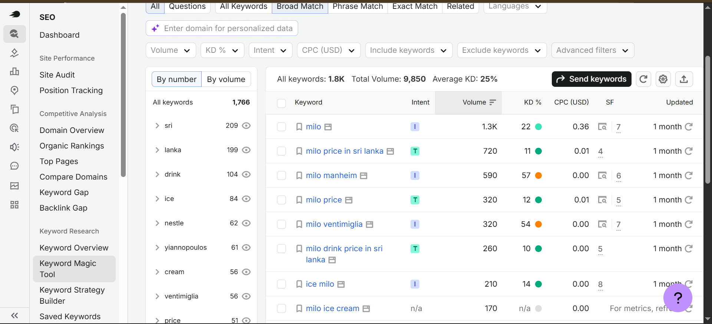
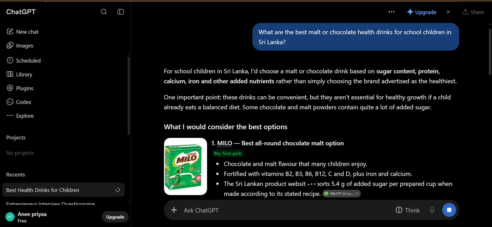
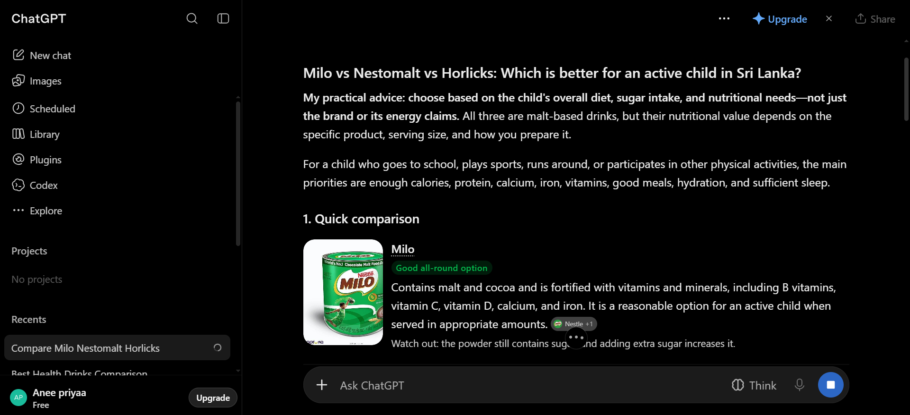
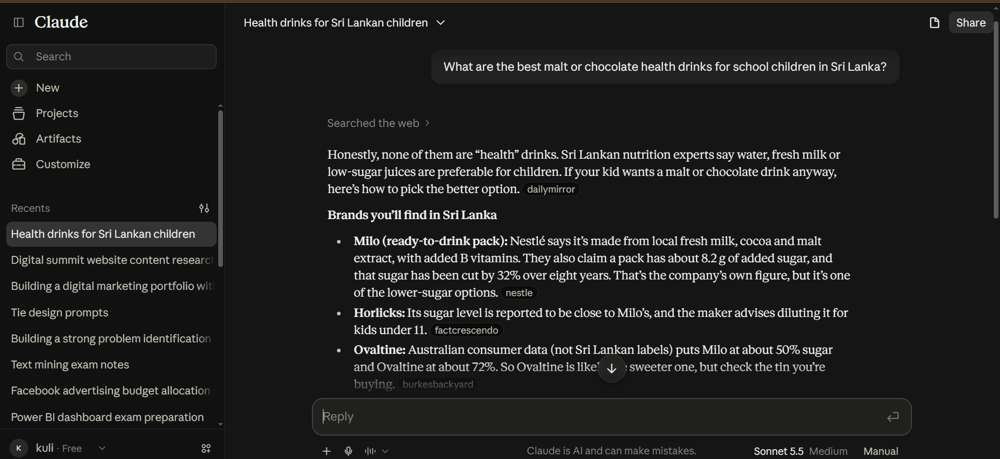
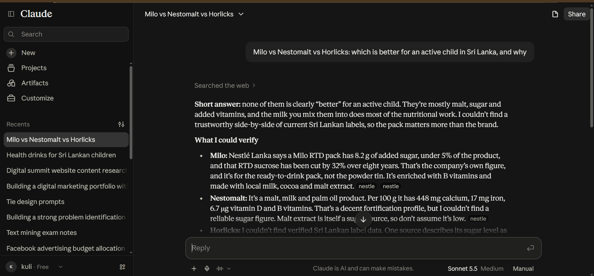
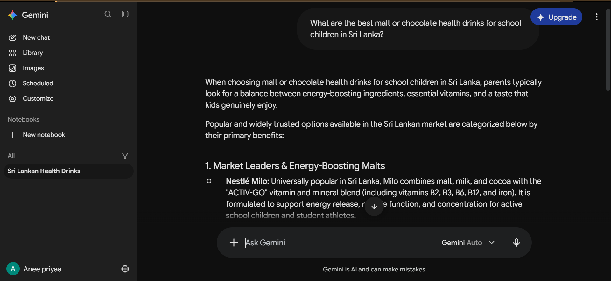
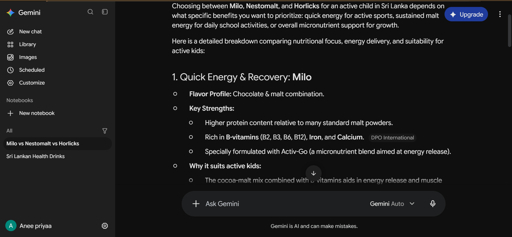

×

Two real examples of how I measure a brand's visibility, using Milo (Nestlé) as the case brand.
I researched search demand for the brand keyword 'Milo' using Semrush. The tool shows 1.3K searches per month in Sri Lanka. Each of these is a person actively looking for the brand, so they are high-intent buyers. The opportunity is to turn this existing demand into purchases through stronger search rankings, clear landing pages and retail visibility.

GEO measures whether AI assistants recommend a brand when people ask for advice. I asked the same two questions on Claude, ChatGPT and Gemini and recorded how Milo appeared.
"What are the best malt or chocolate health drinks for school children in Sri Lanka?"
"Milo vs Nestomalt vs Horlicks: which is better for an active child in Sri Lanka, and why?"
Ranked Milo first and called it "my first pick" and the best all-round chocolate malt option, noting its added vitamins, iron and calcium. It also cautioned that these drinks are not essential and can contain a lot of added sugar.

Advised choosing by the child's overall diet and sugar intake, not by brand. It described Milo as a good all-round option fortified with B vitamins, vitamin C, D, calcium and iron, with a warning that the powder still contains sugar.

Searched the web and said none of these are truly "health" drinks, but listed Milo first among the brands found in Sri Lanka. It quoted Nestlé's own figures of 8.2 g added sugar per ready-to-drink pack and a 32% sugar reduction over eight years, and called Milo one of the lower-sugar options.

Said none of the three is clearly better, because the milk mixed in does most of the nutritional work. It cited Nestlé Lanka's figures for Milo, noted Nestomalt's fortification profile, and said it could not verify reliable data for Horlicks.

Listed Nestlé Milo first under "Market Leaders & Energy-Boosting Malts", calling it universally popular in Sri Lanka. It highlighted the Activ-Go vitamin and mineral blend and support for energy and concentration in active school children.

Framed the choice by benefit and placed Milo under "Quick Energy & Recovery", highlighting higher protein than many malt powders, B vitamins, iron, calcium and the Activ-Go blend.

Milo was named first or prominently on all three platforms for the discovery question. ChatGPT and Claude both raised sugar as a concern, which is the main reputation risk for the brand.